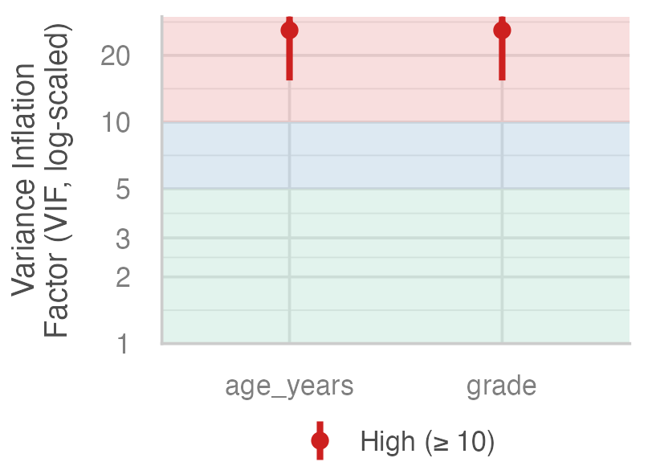
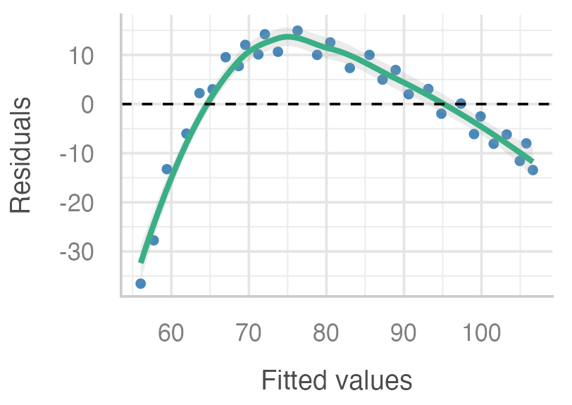
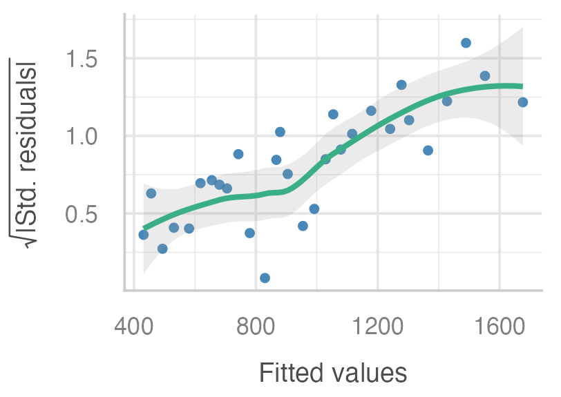
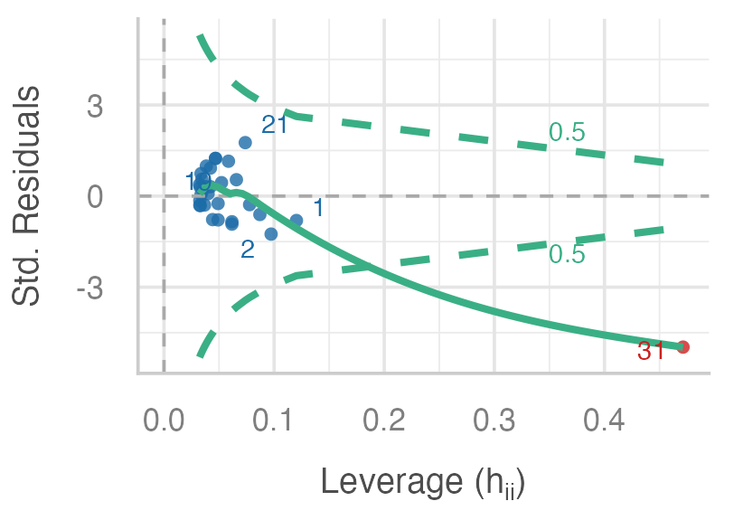
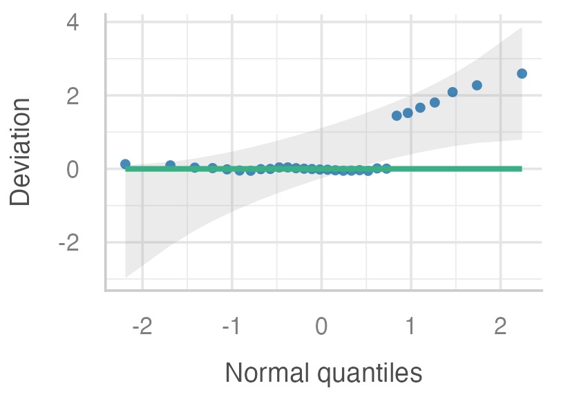

Sample size
Do you have enough observations for your model?
Each residual should be independent of the others.
check_model() in the performance packagePredictors should not carry overlapping / opposite / missing information.

lm(height ~ age + grade): age and grade both have high VIF.Is the relationship really a straight line?

lm(quiz_score ~ study_hours): the smoother bends away from the zero line.The spread of the residuals should stay constant / increasing / normal across fitted values.

lm(spending ~ income): residual spread increases as fitted values increase.An influential point is one that combines high leverage / variance / skewness and a large residual / intercept / p-value.

lm(chol ~ bmi): one observation lies outside the Cook's distance contour.The residuals should look roughly normal / uniform / skewed.

lm(er_visits ~ poverty): points in the right tail fall outside the confidence band.The predictor should be unrelated to the error term ("exogenous" means born outside / inside / after the system).